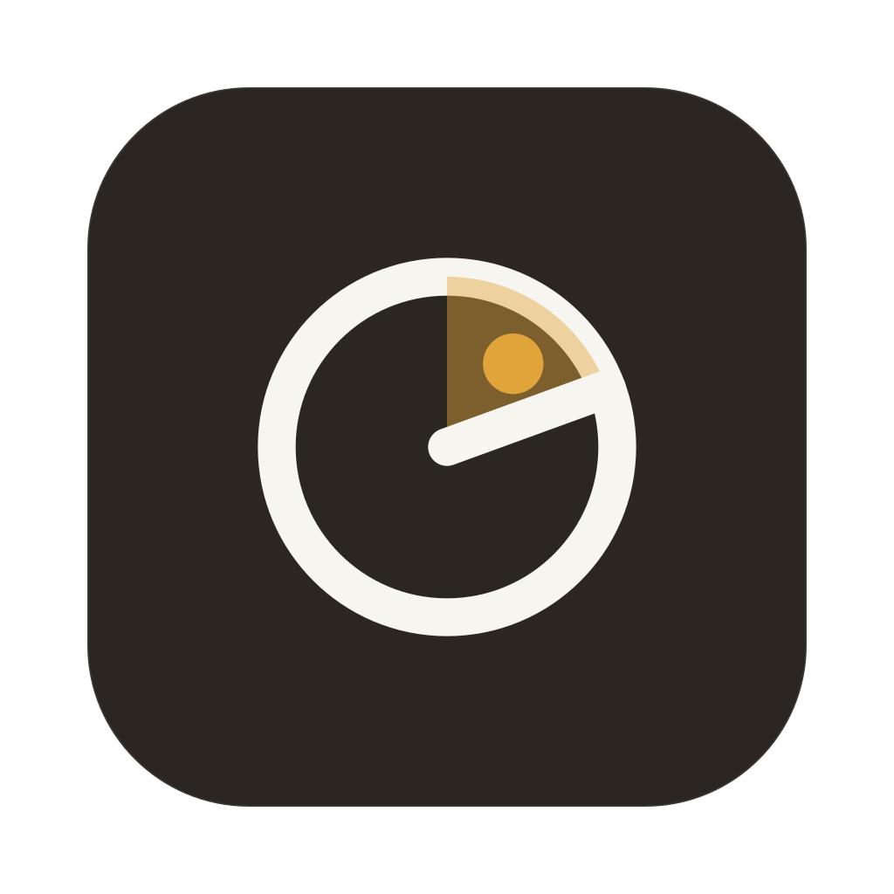

The mark

app icon
macOS tray running · stopped
wordmark
A fish-finder ring, its sweep lit, one blip found: Trawler reading the traffic it catches.
One source
flowchart LR
S["ui/src-tauri/icons/source/*.svg + MANIFEST.json (signed, hand-authored)"] --> X["cargo xtask icons (W3)"]
X --> I["icon set: .icns · .ico · PNGs (bundle.icon)"]
X --> T["tray PNGs: macOS template pair · coloured pair"]
X --> F["favicon · README / About lockups"]
S --> W["W10 installer art + social preview"]
W --> X
Nothing downstream is drawn by hand; a change to the mark is a design WU that edits the source folder.
The rules
| # | Rule | Why |
|---|---|---|
| 1 | ui/src-tauri/icons/source/ is the single source of truth; MANIFEST.json names each file, its viewBox, purpose and consumer. Every generated asset comes from it; an edit goes back through a design WU and the owner | the old icon set had no source and could not be reproduced |
| 2 | Sources are plain SVG: literal fills, no CSS var(), no <text> (the wordmark is outlines), no external references | librsvg and tauri icon ignore var(); an outlined wordmark ships no font |
| 3 | The viewBoxes are the manifest's: master 1024 (824 body, 185 corner), icon-small on a 16 grid, macOS templates on an 18 grid, coloured tray on 16. icon.svg feeds sizes above 32 px, icon-small.svg the 16–32 layers | each glyph snaps to the pixel grid it is shown at; the master's thin ring blurs at 16 |
| 4 | Tray states differ by shape only: running = ring + lit sweep + blip, stopped = empty ring + centre dot | macOS tints a template, so colour cannot carry state |
| 5 | Template images (black + alpha) on macOS only; Windows and Linux get the coloured pair (running: dark tile, amber sweep; stopped: muted tile) | a black glyph disappears on a dark taskbar |
| 6 | Amber is a brand colour (icon, tray, lockups, installer art, social preview), never a UI colour; icon-ink.svg is the fallback where colour is not allowed | DEC-19 keeps the app UI free of a chromatic accent; the owner's signature overrides plan Q3's “ink-only mark” |
| 7 | The wordmark is lowercase trawler in DM Mono; wordmark-light / -dark name the theme it sits on | the face the owner signed; DM Mono is OFL-1.1, already in the notice (DEC-88) |
| 8 | Installer art and the social card are sources in the same folder (signed dmg=B · nsis=C · wix=C · social=C): dmg-background.svg + @2x, nsis-header / nsis-sidebar, wix-banner / wix-dialog, social-preview.svg (the W10 layout replaced W9's). Each is drawn at its consumer's exact size; Windows text areas stay white; the DMG keeps a #7a756f chip under each Finder label; DMG positions stay at the bundler defaults (app 180,170 · Applications 480,170 · window 660×400) | Finder draws labels black or white by appearance, only a mid tone passes 4.5:1 for both; NSIS/WiX draw black page text over the bitmaps |
| 9 | The Windows installer bitmaps ship as BMP: 24-bit, uncompressed, no alpha, exact size (NSIS 150×57, 164×314; WiX 493×58, 493×312); the DMG background as png/jpg/gif (tauri-utils 2.10.2 bundle.macOS.dmg, windows.nsis, windows.wix; bundles built by @tauri-apps/cli 2.12.4 = tauri-bundler 2.10.4) | what the pinned schema and installers accept; a wrong size is stretched (NSIS sets no _NOSTRETCH) |
Palette
| Role | Value |
|---|---|
| tile (warm dark, the UI canvas) | #2b2622 |
| ink strokes | #f7f5f0 |
| amber: sweep (45–55 % opacity) and blip | #e0a43a |
| stopped tray tile | #6f6a64 |
| wordmark on light · on dark | #1f1c19 · #f2efe8 |
| social canvas · tagline | #1b1916 · #aea69c |
| installer art: paper (light canvas) · deep amber (arrows on light, 3.6:1) · label chip (Finder labels) | #f4f1ea · #a8741a · #7a756f |
| tile edge | #ffffff at 10–14 % opacity |
Rejected
Drafts A/B/C (net, serif T, hook and packet); the terminal fish ><> family and every hybrid (R2); finalists 5b4 Aperture (recommended) and 1b2 Wake; the ink-only treatment; sans and serif wordmarks — rounds in docs/work/2026-11-06-prorelease-w9-logo-round-{1,2,3}.html.
Held by
W3's unit test (planned): every manifest file exists, its viewBox matches, no var(), and the generated set's recorded source hash matches. Until W3: the W9 and W10 render checks (rsvg-convert of every source at its exact size).